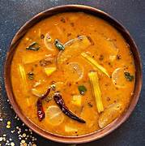

Sambar

Description
Sambhar is a tangy and flavorful South Indian dish made with lentils, vegetables, and a unique blend of spices.
Ingredients
- Toor dal (200 g)
- Mixed vegetables (carrots, beans, drumstick, etc.)
- Tamarind pulp (2 tablespoons)
- Sambhar powder (2 tablespoons)
- Mustard seeds, curry leaves, and dried red chilies
- Turmeric and salt
- Oil
Steps to Prepare
- Cook the dal with turmeric and set aside.
- Boil the vegetables until tender.
- Heat oil and temper mustard seeds, curry leaves, and red chilies.
- Add the vegetables, dal, tamarind pulp, sambhar powder, and salt. Simmer for 10 minutes.
- Serve hot with steamed rice or idli/dosa.